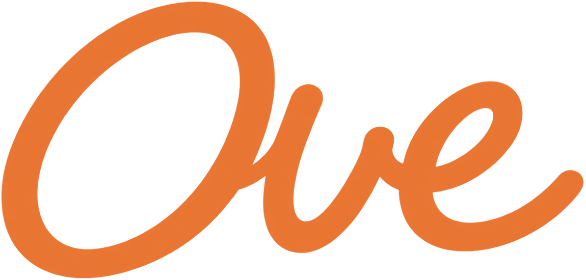

메인 블루
Main Blue
#245AC4RGB · 36, 90, 196기본 로고 · 핵심 브랜드 컬러
HEXAGON R STUDIO · OVE
CI 가이드라인 및 로고 사용 규정
VERSION 1.1 · 2026.10
PRIMARY WORDMARK


연결감과 유연함을 담은 워드마크
오브(OVE)의 로고는 부드럽게 이어지는 하나의 곡선 흐름으로 완성된 워드마크입니다. 부드럽게 이어지는 곡선은 부산의 다양한 장소와 음식, 일상을 하나의 흐름으로 연결하는 오브의 시선을 표현합니다.
유연한 형태에는 친근하고 자유로운 브랜드의 성격을 담았습니다. 로고와 기존 색상 체계는 오브의 콘텐츠 전반에 일관되게 사용합니다.
기본 로고는 메인 블루 #245AC4를 사용합니다. 포인트 오렌지 #E97532는 포인트 로고와 강조 요소에 사용하며, 크림·피치·서브 블루는 로고를 받쳐주는 배경과 보조 면에 사용합니다.
오브(OVE)는 부산에 사는 AI 인플루언서이며, AI로 제작한 가상 인물입니다. 부산의 맛집, 여행, 숨은 장소와 일상을 자기 취향대로 소개합니다.
모아(MOA)는 파란 스카프와 MOA 팬던트를 착용한 치즈 고양이 캐릭터입니다. 시크하고 무심하지만 호기심이 많고, 귀와 꼬리, 움직임으로 감정을 표현합니다. 오브와 함께 부산을 경험하면서 콘텐츠에 재미와 돌발 상황을 더합니다.
COLOR PALETTE
Main Blue
#245AC4RGB · 36, 90, 196기본 로고 · 핵심 브랜드 컬러
Point Orange
#E97532RGB · 233, 117, 50포인트 로고 · 강조 요소
Sub Cream
#FFF5E6RGB · 255, 245, 230따뜻한 기본 배경
Sub Peach
#FFBB8ERGB · 255, 187, 142보조 배경 · 그래픽 면
Sub Blue
#E5EDF9RGB · 229, 237, 249차분한 보조 배경
메인 블루를 중심으로 포인트 오렌지를 제한적으로 사용합니다. 포인트 로고는 오렌지 #E97532 단색으로 화이트·크림 배경 위에 사용합니다. 서브 컬러 3종은 배경과 보조 그래픽에 사용하며 로고 색상으로 대체하지 않습니다. 화면에서는 위 HEX·RGB 값을 그대로 적용하고, 인쇄에서는 용지와 출력 환경에 맞춰 색상 교정 후 확인합니다.
CLEAR SPACE
로고 주변에는 시각적 명확성을 위해 일정한 최소 여백을 확보해야 합니다. 여백 단위 1x는 로고 심볼 우측 하단 획의 가로 높이를 기준으로 합니다. 블루·오렌지·검정·화이트 역상 로고 모두 동일한 여백을 적용하며, 여백 안에 문자나 그래픽을 배치하지 않습니다.
MINIMUM SIZE
24px 실제 크기10mm 권장 최소 크기제작물의 해상도와 매체 조건에 따라 심볼마크가 뭉개져 보이지 않도록 권장 최소 크기를 준수합니다. 모든 배경에서 로고의 지정 색상과 100% 불투명도를 유지합니다.
INCORRECT USAGE / DON'TS
기본 로고는 블루 #245AC4, 포인트 로고는 오렌지 #E97532, 단색 인쇄에는 검정 #000000, 역상 로고에는 화이트 #FFFFFF를 사용합니다.
임의로 가로·세로 폭을 변경하지 않습니다.
지정 각도 외에 회전 및 기울이지 않습니다.
블루 #245AC4·오렌지 #E97532·검정 #000000·화이트 #FFFFFF 외의 색상, 그라데이션 또는 여러 색의 혼합을 로고에 적용하지 않습니다.
식별성을 저해하는 낮은 투명도를 금지합니다.
입체, 음영, 외곽선 등의 효과를 적용하지 않습니다.
가독성을 해치는 배경 위에 사용하지 않습니다.
BACKGROUND USAGE
화이트·크림·피치·서브 블루 배경에는 메인 블루 로고를 사용합니다. 메인 블루·포인트 오렌지 또는 어두운 배경에서는 화이트 역상 로고를 사용합니다. 화이트 배경의 단색 제작물에는 검정 #000000 로고도 사용할 수 있습니다. 검정과 화이트는 로고용 중립색이며, 브랜드 팔레트 5색과 구분합니다.
#FFFFFF 배경 · #245AC4 로고

#245AC4 배경 · #FFFFFF 역상 로고
#E97532 배경 · #FFFFFF 역상 로고
#FFF5E6 배경 · #245AC4 로고
#FFBB8E 배경 · #245AC4 로고
#E5EDF9 배경 · #245AC4 로고